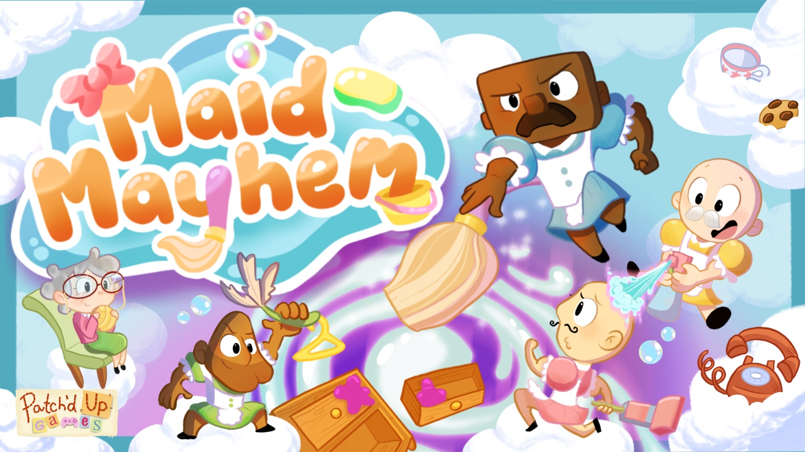
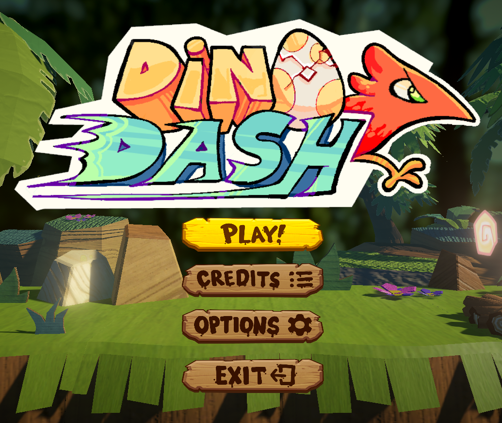
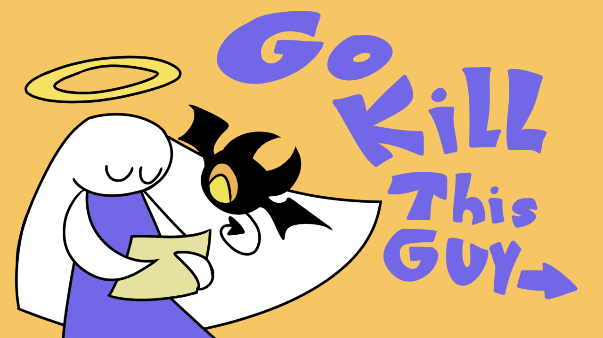
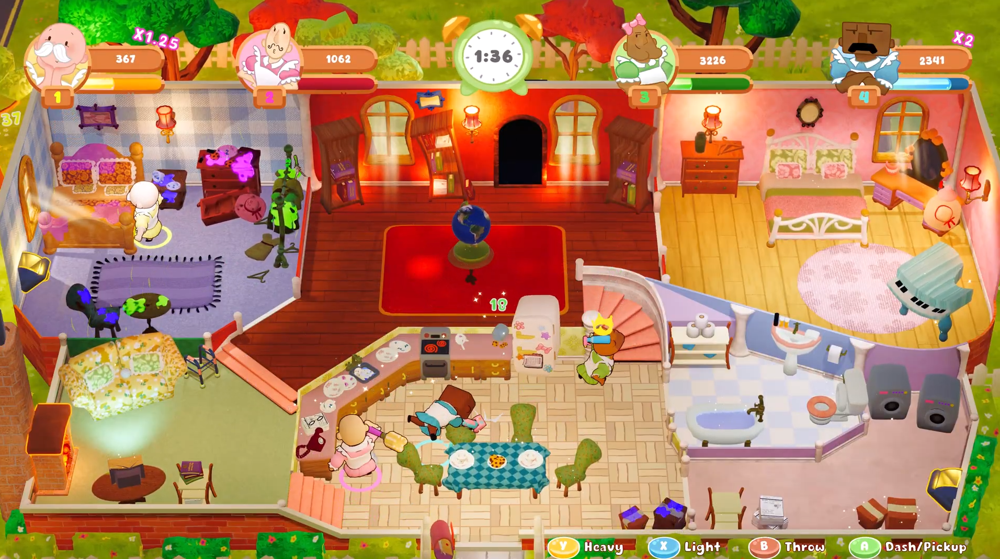
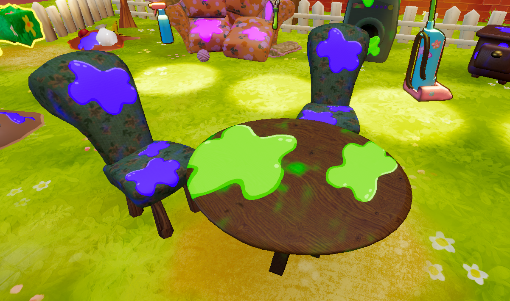
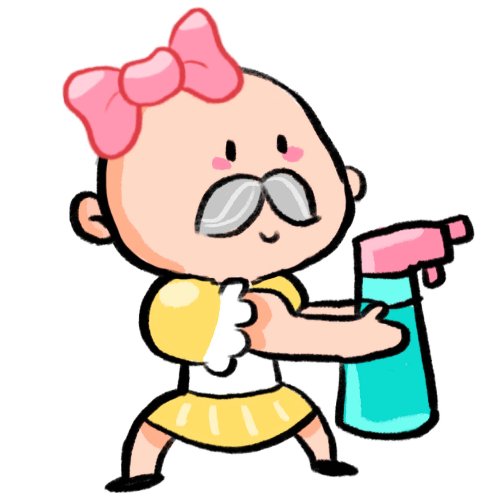
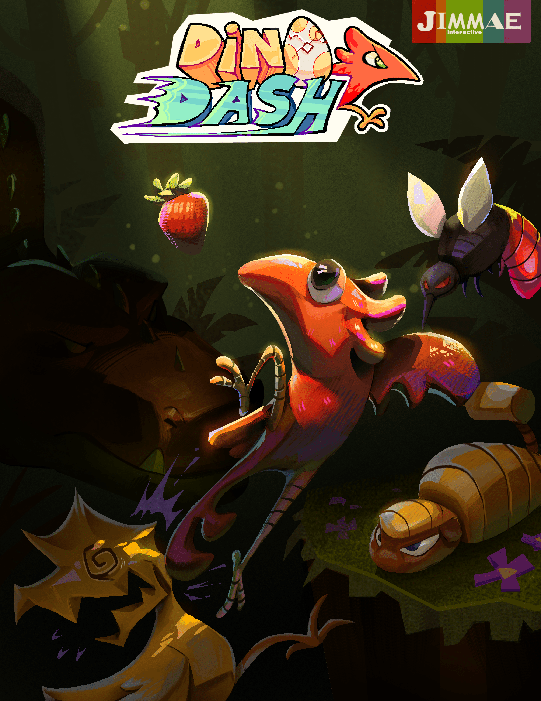
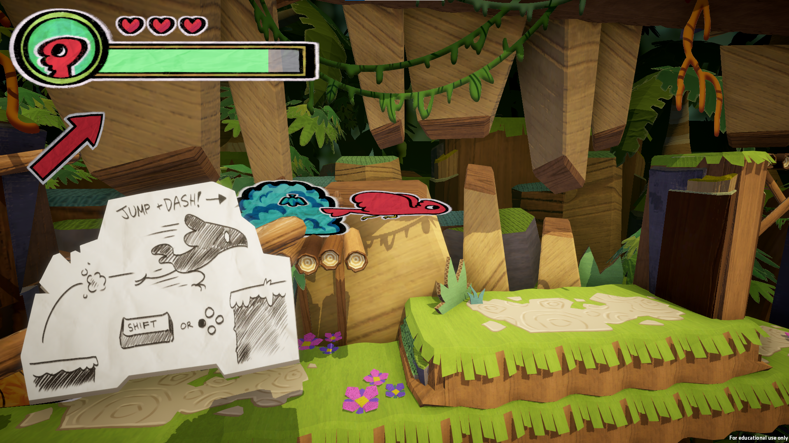
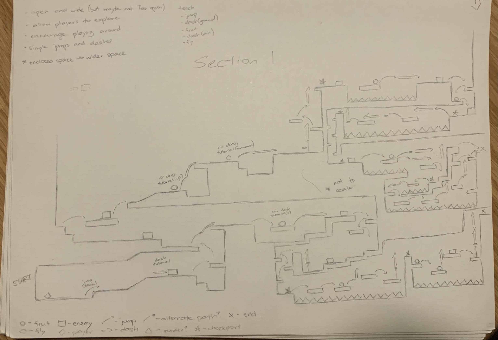

About Me
Welcome to the show! My name is Matthew Shotunde and I am a game developer based in the Niagara Region.
I've been studying game development at Brock University and Niagara College for 4 years and I am extremely passionate about the work that I do.
I describe myself as a generalist in game development, but I focus primarily on design and programming.
Take a look around!
If you find anything you like and want to get in touch, you can always shoot me an email or send me a message on LinkedIn.
Thank you for visiting!
Maid Mayhem

1st Place People's Choice & 2nd Place Achievement in Audio - Level Up Showcase 2026
Maid Mayhem is a 2-player to 4-player competitive party game where you take on the role of a big buff bald maid. Your task is to clean as much of old lady Twiggy's house as you can in 3 minutes by whacking dirty furniture and hitting away your competition.
Dino Dash

Dino Dash is a single-player 2.5D platformer. A little red raptor gets lost in the jungle and it's your job to help get it back to its nest. Run, jump, and dash through enemies to find a way back home.
Go Kill This Guy

In Go Kill This Guy, take on the role of Hevyn and Hel, an angel-devil duo, as they proceed through tests to acquire their exorcist licence. Vanquish an array of vile creatures for their many crimes in this short 2D platformer-shooter.
Maid Mayhem
Maid Mayhem is a 2-player to 4-player competitive party game where you take on the role of a big buff bald maid. Your task is to clean as much of old lady Twiggy's house as you can in 3 minutes by whacking dirty furniture and hitting away your competition.
Roles: Creative Director, Designer, General Programmer, 3D Animator
Project Time Frame: Sept. 2025 - Apr. 2026
Team Size: 11
Engine: Unity 6
Tools Used: C#, 3DS Max, Krita
Steam Link: Maid Mayhem on Steam
This project was made for our final capstone project in the GAME program at Brock University.
I took on the role as creative director for the team to lead the overall vision of the game and maintain cohesion between the mechanics, artistic direction, and audio components to align with the intended player experience.

I was a core member of the design team, planning out how our various mechanics would work together and fit with the core pillars of the game. I also participated in the many iterations of level design for the dirty house.
In addition to my work as a designer, I was also a general programmer on the team. I worked on several systems such as the tutorial, awards, and dynamic camera, as well as a shader to overlay a coloured dirt texture on top of an object (see below). However, my primary areas of work were in implementing the character animations, as well as the various soundtracks and their transitions.

I also worked on some character animations for the unarmed, mop, and feather duster weapons in the game (as you can see below).
We showed off this game at the Level Up Showcase 2026 for post-secondary school game projects.
At the end of the night, among over 150 other teams, we were awarded with 1st place People's Choice (the popular vote), as well as 2nd place Achievement in Audio.

Dino Dash

Dino Dash is a single-player 2.5D platformer. A little red raptor gets lost in the jungle and it's your job to help get it back to its nest. Run, jump, and dash through enemies to find a way back home.
Roles: Producer, Lead Designer, General Programmer, QA Tester
Project Time Frame: Jan. 2024 - Apr. 2024
Team Size: 6
Engine: Unity 2022
Tools Used: C#, Hansoft
itch.io Link: Dino Dash on itch.io
Dino Dash was made in fourth months for our Rapid Game Dev class at Niagara College. It is a 2.5D sidescroller where you play as a little red raptor that can dash around to clear gaps and defeat foes.
My primary roles on the team were that of producer and design lead. I communicated frequently with the team to ensure that production was coming along smoothly and kept track of task completion in Hansoft.
As design lead, my main tasks involved polishing the mechanics and gameplay experience to fit into the "speedy" feel of the game. This required several small tweaks, as well as some cuts for mechanics that did not fit the core pillars.

As a programmer on the team, I helped adjust several scripts to add impact and responsiveness to the many mechanics of the game. I was also in charge of implementing character animations and event scripting for in-game cutscenes.
Additionally, I was in charge of level design on the team. From paper drawings to in-engine blockouts, and the many tweaks and iterations that followed.

Go Kill This Guy
Uh...hey :D